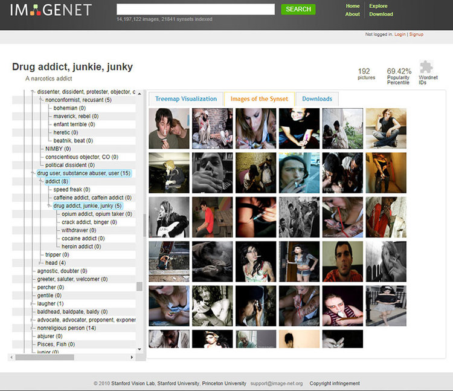
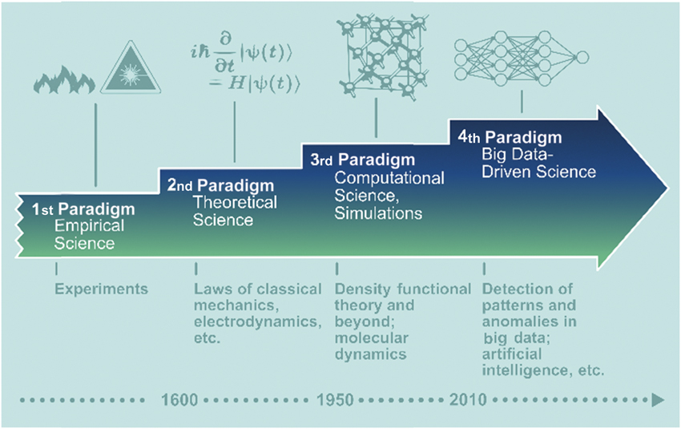
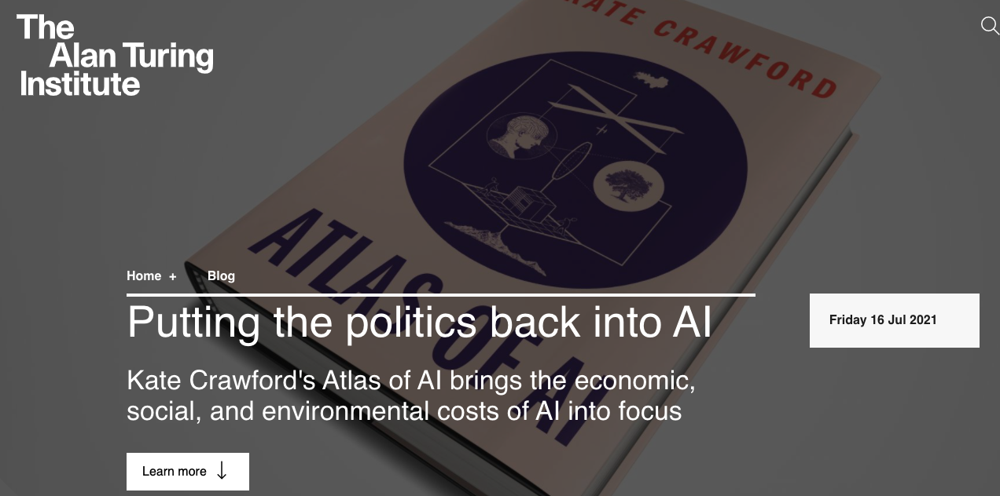
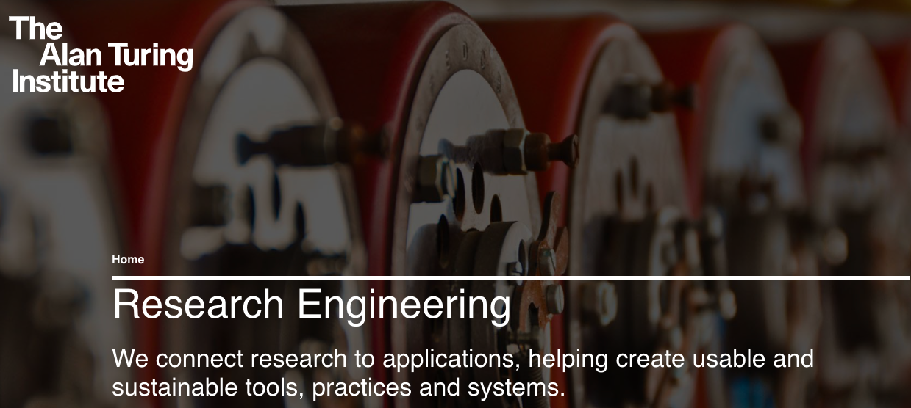

1.1 What is [research] data science?
Contents
1.1 What is [research] data science?¶
We use the term Data Science to refer to a varied ensemble of practices, methodologies, and tools that may be used to learn from or about data.
Research Data Science is a broader term, which we sometimes use to describe the work done in the research engineering group at Turing, it includes the additional challenges encountered when applying data science in a collaborative research environment.
Data is critical to data science. In this module we discuss:
key considerations when faced with a dataset
the main components of data science and the role that data science plays in research.
Data¶
The availability of large-scale datasets, for example for training face recognition algorithms or language models, is a fairly new phenomenon. Creating, refining and, making data consumable takes a substantial effort, and acquiring data remains complex (e.g., digitisation).
These processes should not be taken for granted. Two important considerations to keep in mind when faced with a dataset are how the data was created, and how representative the data is.
Data Creation¶
Data is not a natural resource, it is always the product of human decisions and actions. Data is often the outcome of an enormous amount of labour, resources, infrastructure, and time.
Example data creation tasks are:
collecting information or the tracking of historical information
organising information in specific categories
measuring and storing information as data on digital infrastructure
Whenever a dataset is enriched with metadata information or specific labels, keep in mind someone has provided those. Even if the labels you see are automatically assigned, the tool would have been trained on manual labels.
For example, the famous ImageNet dataset, central component for the development of many well known image recognition pipelines relies on two pillars:
a taxonomy developed since 1985 as part of the lexical database WordNet, which provides a top-down hierarchical structure of concepts (“chair” is under artifact->furnishing->furniture->seat->chair)
an enormous amount of cheap workforce provided by Amazon Mechanical Turk.

Data Representativeness¶
The data we have available is just a sample and not the complete story. The question we should ask ourselves is:
“What can these data points tell us about the wider phenomenon that we’re really interested in?”
In an article by Anna Rogers,the author considers the following argument:
“the size of the data is so large that, in fact, our training sets are not a sample at all, they are the entire data universe”.
Rogers replies to it by saying that this argument would stand if the “data universe” that we use for training for instance a speech recognition system was the same as “the totality of human speech/writing”. It is not, and will hopefully never be, because collecting all speech is problematic for ethical, legal, and practical reasons (e.g., not all tweets are archived).
Anything less than the whole data universe is a sample. Given the existing social structures, no matter how big that sample is, it is not representative due to (amongst other things) unequal access to technology, unequal possibility to defend one’s privacy and copyright, and limited access to the huge volumes of speech produced in the “walled garden” platforms like Facebook.
Data Science¶
Data science allows us to learn about data. However, terms commonly associated with data science - e.g., AI, deep learning - are only the tip of the iceberg. They rely on many steps that are briefly introduced here, and built upon throughout the course.

Collection and Storage¶
Part of the work of a data scientist is knowing the challenges and hurdles involved in data collection and storage (e.g., our Living with Machines project).
It is essential that we know who owns the data, what restrictions apply, how a resource should be stored for long-term preservation and made available to collaborators (e.g., Turing’s Data Safe Haven).
In small team contexts’ data scientists often take care directly of such responsibilities. These topics are explored more in Module 2: Getting and Loading Data.
Wrangling¶
Commonly, we need to alter a freshly obtained dataset to a more analysis-ready state. We might need to remove inconsistencies and inaccuracies (a process called data cleaning), combine data sources, or otherwise change the data into our desired format.
These tasks can be collectively called data wrangling. Although often this task is the largest part of a data scientist’s work it is often undervalued. We will explore this topic more in Module 2: Exploring and Wrangling.
Exploring and Visualisation¶
For many disciplines the availability of large datasets is unprecedented. This creates opportunity, but defining new research questions or business goals is complex.
Understanding a dataset well can unlock opportunities for new insights and help specific research questions.
For example, a dataset combining aggregate GPS activity and traffic monitoring data has been successfully and effectively used by two Turing projects: the London Air Quality project, and Project Odysseus, which monitored the level of activity during the pandemic.
A powerful tool to develop understanding is data visualisation. This will be the focus of Module 3.
Modelling¶
Modelling is the core activity of data scientists.
Though, as we have seen, we might spend more time on other activities, the goals of modelling are present throughout. We build models with a specific goal in mind (more in Module 4). This begins with the project scoping process (see 1.2 Research Data Science Project Lifecycle), specifying a research question, task, and measures of success.
When modelling we are often comparing what works “best” (which can also mean most reliably) in a given setting, rather than improving over a given start-of-the-art (which may be the job of an expert researcher).
Data-Driven Science¶
The availability of data and expanding toolbox of data science techniques is changing science.
Even as far back as 2009 it was suggested a fourth scientific paradigm was emerging.

"scientists have recognized experimental and theoretical science as the basic research paradigms for understanding nature. In recent decades, computer simulations have become an essential third paradigm..." They continue to say that "a fourth paradigm is emerging, consisting of the techniques and technologies needed to perform data-intensive science".
And one author even claimed the end of theory!
Here, and in similar articles (e.g., Kitchen, 2014), we see the following ideas:
Big Data can capture a whole domain and provide full resolution.
There is little need for a priori theory, models, or hypotheses.
Through the application of agnostic data analytics the data can speak for themselves free of human bias or framing, and any patterns and relationships within Big Data are inherently meaningful and truthful;
meaning transcends context or domain-specific knowledge, thus can be interpreted by anyone who can decode a statistic or data visualization.
Developing a Critical Mindset¶
In the intervening decade there has been a lot of discussion on the shortcomings on Big Data. Our perception of data science in society and research has changed. Our understanding of biases embedded within data has increased – biases that are passed on to trained models.
In this course we learn how to approach data, methods, and research questions in with a critical mindset. We aim to produce findings that are reliable, reproducible, and context-aware.

Research data scientist¶
We have seen that there are many components to data science. As a data scientist, we will often:
be the central element in the projects we are involved with, connecting data providers, domain experts and final users.
ask “why” people want to use data science approaches. We need to be aware of limitations and the societal context of the research.
contribute to shaping research directions and guaranteeing reproducibility.

For a brief deep-dive on the role of a data scientist, consider our large-scale Living with Machines project. A five-year study on the Industrial Revolution using data-driven approach with over twenty members, and currently five Turing Research Engineering Group members. Our responsibilities have involved:
Acquiring data, organising data for easy access, and classifying the level of sensitivity.
Storage in a secure environment (Turing’s Data Safe Haven) for work on copyright-protected collections
Design and develop software to help deal with different data sources, for example:
Contribute to research papers based on data science methods. Here we contribute both to shaping the research direction and to evaluating method performance:
Management, for example: planning tasks, leading subprojects, mentoring researchers, handling stake-holder expectations.
References¶
Rogers, A. (2021). Changing the World by Changing the Data. arXiv preprint arXiv:2105.13947.
Anderson, C. (2008). The end of theory: The data deluge makes the scientific method obsolete. Wired magazine, 16(7), 16-07.
Bell, G., Hey, T., & Szalay, A. (2009). Beyond the data deluge. Science, 323(5919), 1297-1298.
Crawford, K. (2021). The Atlas of AI. Yale University Press.
D’ignazio, C., & Klein, L. F. (2020). Data feminism. MIT press.
Kitchin, R. (2014). Big Data, new epistemologies and paradigm shifts. Big data & society, 1(1).
Wickham, H. (2014). Tidy data. Journal of statistical software, 59(1), 1-23.